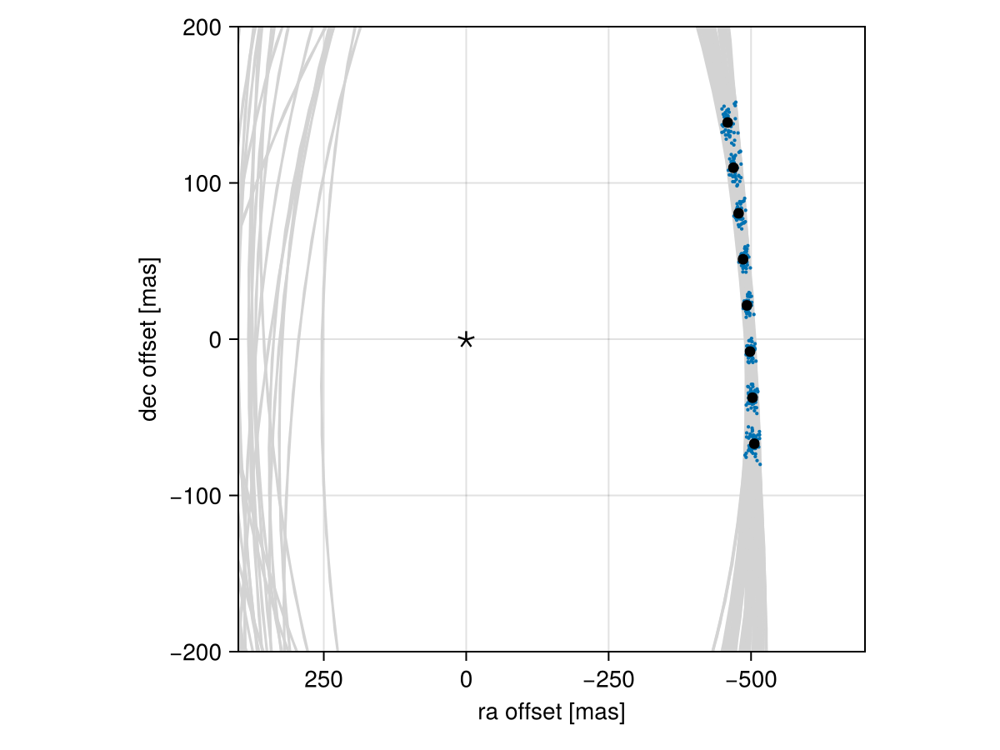

Posterior Predictive Checks
A posterior predictive check compares our true data with simulated data drawn from the posterior. This allows us to evaluate if the model is able to reproduce our observations appropriately. Samples drawn from the posterior predictive distribution should match the locations of the original data.
To demonstrate, we will fit a model to relative astrometry data:
using Octofitter
using Distributions
astrom_like = PlanetRelAstromLikelihood(Table(;
epoch= [50000,50120,50240,50360,50480,50600,50720,50840,],
ra = [-505.764,-502.57,-498.209,-492.678,-485.977,-478.11,-469.08,-458.896,],
dec = [-66.9298,-37.4722,-7.92755,21.6356, 51.1472, 80.5359, 109.729, 138.651,],
σ_ra = fill(10.0, 8),
σ_dec = fill(10.0, 8),
cor = fill(0.0, 8)
))
@planet b Visual{KepOrbit} begin
a ~ truncated(Normal(10, 4), lower=0, upper=100)
e ~ Uniform(0.0, 0.5)
i ~ Sine()
ω ~ UniformCircular()
Ω ~ UniformCircular()
θ ~ UniformCircular()
tp = θ_at_epoch_to_tperi(system,b,50420) # reference epoch for θ. Choose an MJD date near your data.
end astrom_like
@system Tutoria begin
M ~ truncated(Normal(1.2, 0.1), lower=0)
plx ~ truncated(Normal(50.0, 0.02), lower=0)
end b
model = Octofitter.LogDensityModel(Tutoria)
using Random
Random.seed!(0)
chain = octofit(model)Chains MCMC chain (1000×28×1 Array{Float64, 3}):
Iterations = 1:1:1000
Number of chains = 1
Samples per chain = 1000
Wall duration = 6.36 seconds
Compute duration = 6.36 seconds
parameters = M, plx, b_a, b_e, b_i, b_ωy, b_ωx, b_Ωy, b_Ωx, b_θy, b_θx, b_ω, b_Ω, b_θ, b_tp
internals = n_steps, is_accept, acceptance_rate, hamiltonian_energy, hamiltonian_energy_error, max_hamiltonian_energy_error, tree_depth, numerical_error, step_size, nom_step_size, is_adapt, loglike, logpost, tree_depth, numerical_error
Summary Statistics
parameters mean std mcse ess_bulk ess_tail rh ⋯
Symbol Float64 Float64 Float64 Float64 Float64 Float ⋯
M 1.1879 0.0937 0.0035 725.8698 757.1258 0.99 ⋯
plx 50.0003 0.0206 0.0007 908.1759 368.8283 1.00 ⋯
b_a 11.8217 2.1478 0.1524 185.3611 347.0400 1.00 ⋯
b_e 0.1568 0.1151 0.0065 317.2318 312.0475 1.00 ⋯
b_i 0.6446 0.1471 0.0100 230.6606 222.1760 0.99 ⋯
b_ωy 0.0013 0.7429 0.0847 92.1889 451.8662 0.99 ⋯
b_ωx -0.0157 0.6897 0.0556 189.3206 535.4323 1.00 ⋯
b_Ωy -0.0200 0.7706 0.1151 55.9193 290.2122 1.01 ⋯
b_Ωx 0.0459 0.6535 0.0983 51.1757 313.4401 1.02 ⋯
b_θy 0.0745 0.0103 0.0003 928.4183 793.5969 0.99 ⋯
b_θx -1.0022 0.1010 0.0033 953.7531 621.6724 0.99 ⋯
b_ω -0.2094 1.8117 0.1270 242.9618 395.6031 1.00 ⋯
b_Ω -0.3615 1.8348 0.2360 82.2058 296.3564 1.00 ⋯
b_θ -1.4965 0.0074 0.0003 843.4137 708.4912 1.00 ⋯
b_tp 42419.3338 4909.8298 547.7841 59.8491 418.6033 1.03 ⋯
2 columns omitted
Quantiles
parameters 2.5% 25.0% 50.0% 75.0% 97.5%
Symbol Float64 Float64 Float64 Float64 Float64
M 1.0032 1.1274 1.1850 1.2524 1.3752
plx 49.9605 49.9867 50.0000 50.0148 50.0396
b_a 8.3996 10.2074 11.5465 13.1232 16.6243
b_e 0.0063 0.0586 0.1382 0.2391 0.4097
b_i 0.3289 0.5548 0.6572 0.7446 0.9156
b_ωy -1.0790 -0.7422 -0.0308 0.7613 1.0632
b_ωx -1.0416 -0.6886 -0.0085 0.6339 1.0758
b_Ωy -1.0742 -0.8113 -0.0564 0.7981 1.0762
b_Ωx -1.0393 -0.4959 0.1028 0.6252 1.0286
b_θy 0.0558 0.0674 0.0742 0.0809 0.0962
b_θx -1.2155 -1.0699 -0.9967 -0.9313 -0.8056
b_ω -2.9823 -1.9896 -0.0135 1.0970 2.9783
b_Ω -3.0069 -2.2889 0.1327 1.0144 2.8729
b_θ -1.5111 -1.5015 -1.4965 -1.4917 -1.4827
b_tp 32205.7638 39100.3833 43131.1696 46025.7772 49859.7634
We now have our posterior as approximated by the MCMC chain. Convert these posterior samples into orbit objects:
# Instead of creating orbit objects for all rows in the chain, just pick
# every twentieth row.
ii = 1:20:1000
orbits = Octofitter.construct_elements(chain, :b, ii)50-element Vector{Visual{KepOrbit{Float64}, Float64}}:
Visual{KepOrbit{Float64}, Float64}(KepOrbit(10.7, 0.19, 0.592, -2.45, 3.36, 42700.0, 1.24), 50.01684578665373, 4.123910589640557e6)
Visual{KepOrbit{Float64}, Float64}(KepOrbit(11.1, 0.0143, 0.632, -1.28, 3.93, 45800.0, 1.08), 49.99665640088176, 4.1255758854378555e6)
Visual{KepOrbit{Float64}, Float64}(KepOrbit(13.1, 0.1, 0.695, 0.595, 3.81, 49300.0, 1.04), 49.98512150408365, 4.1265279305792763e6)
Visual{KepOrbit{Float64}, Float64}(KepOrbit(8.8, 0.254, 0.395, 2.0, 5.14, 44600.0, 1.26), 49.9993822967132, 4.125350964857004e6)
Visual{KepOrbit{Float64}, Float64}(KepOrbit(10.3, 0.106, 0.513, 1.47, 0.00977, 44700.0, 1.25), 50.03012387123658, 4.1228160963756135e6)
Visual{KepOrbit{Float64}, Float64}(KepOrbit(10.3, 0.0284, 0.612, -2.11, 1.39, 40500.0, 1.18), 49.99751576592623, 4.1255049744005785e6)
Visual{KepOrbit{Float64}, Float64}(KepOrbit(12.9, 0.0153, 0.752, -2.49, 0.489, 49000.0, 1.16), 50.000764980206725, 4.1252368855086905e6)
Visual{KepOrbit{Float64}, Float64}(KepOrbit(10.4, 0.168, 0.675, 1.84, 1.01, 47200.0, 1.12), 49.99698009993928, 4.125549174924077e6)
Visual{KepOrbit{Float64}, Float64}(KepOrbit(9.79, 0.0163, 0.541, -0.198, 1.4, 44500.0, 1.21), 49.98604050316658, 4.1264520638903826e6)
Visual{KepOrbit{Float64}, Float64}(KepOrbit(14.6, 0.0432, 0.818, -2.45, 0.286, 48500.0, 1.25), 49.996517449235704, 4.1255873513476723e6)
⋮
Visual{KepOrbit{Float64}, Float64}(KepOrbit(14.8, 0.301, 0.67, 2.88, 3.22, 33900.0, 1.21), 50.00869293429833, 4.1245829054359007e6)
Visual{KepOrbit{Float64}, Float64}(KepOrbit(9.38, 0.136, 0.559, -1.02, 1.67, 43700.0, 1.18), 49.972804376640305, 4.127545023197021e6)
Visual{KepOrbit{Float64}, Float64}(KepOrbit(14.7, 0.481, 0.764, -2.38, 2.3, 34200.0, 1.31), 49.9733008430486, 4.1275040175516433e6)
Visual{KepOrbit{Float64}, Float64}(KepOrbit(12.9, 0.251, 0.641, 0.46, 4.85, 35600.0, 1.17), 49.98748856894181, 4.1263325264985696e6)
Visual{KepOrbit{Float64}, Float64}(KepOrbit(13.9, 0.0808, 0.798, 2.91, 3.47, 36700.0, 1.17), 49.982355897778135, 4.126756258185283e6)
Visual{KepOrbit{Float64}, Float64}(KepOrbit(10.2, 0.0364, 0.353, -1.19, 3.98, 46700.0, 0.982), 50.02349332324461, 4.123362570205669e6)
Visual{KepOrbit{Float64}, Float64}(KepOrbit(9.18, 0.084, 0.325, 0.142, 1.14, 45000.0, 1.15), 50.0235478573165, 4.123358075047679e6)
Visual{KepOrbit{Float64}, Float64}(KepOrbit(12.8, 0.17, 0.799, 0.811, 0.136, 40600.0, 1.22), 50.011143729486044, 4.124380780325732e6)
Visual{KepOrbit{Float64}, Float64}(KepOrbit(13.5, 0.0798, 0.833, 2.28, 0.487, 45200.0, 1.2), 49.99144292342498, 4.1260061310082413e6)Calculate and plot the location the planet would be at each observation epoch:
using CairoMakie
epochs = astrom_like.table.epoch' # transpose
x = raoff.(orbits, epochs)[:]
y = decoff.(orbits, epochs)[:]
fig = Figure()
ax = Axis(
fig[1,1], xlabel="ra offset [mas]", ylabel="dec offset [mas]",
xreversed=true,
aspect=1
)
for orbit in orbits
Makie.lines!(ax, orbit, color=:lightgrey)
end
Makie.scatter!(
ax,
x, y,
markersize=3,
)
fig
Makie.scatter!(ax, astrom_like.table.ra, astrom_like.table.dec,color=:black, label="observed")
Makie.scatter!(ax, [0],[0], marker='⋆', color=:black, markersize=20,label="")
Makie.xlims!(400,-700)
Makie.ylims!(-200,200)
fig
Looks like a great match to the data! Notice how the uncertainty around the middle point is lower than the ends. That's because the orbit's posterior location at that epoch is also constrained by the surrounding data points. We can know the location of the planet in hindsight better than we could measure it!
You can follow this same procedure for any kind of data modelled with Octofitter.